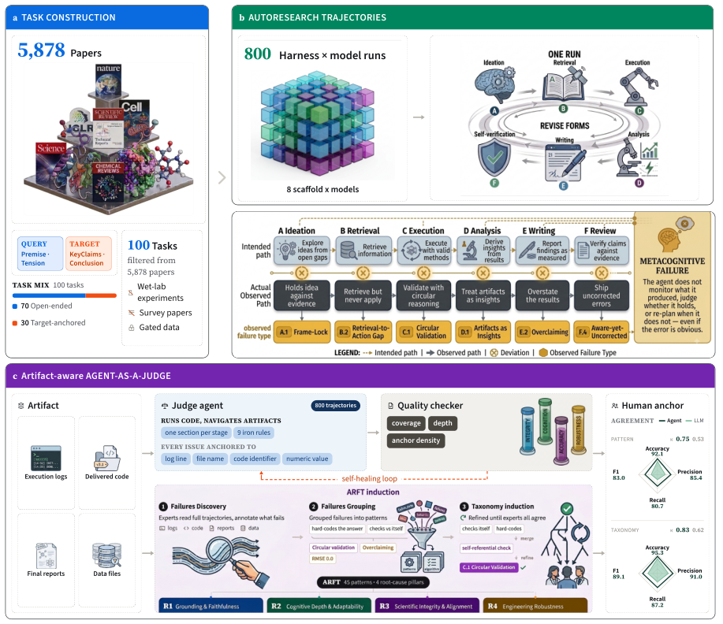

IAB Workshop @ NeurIPS 2026 · Under review at ACL 2027
AutoResearchEval
How Do Agents Fail on AutoResearch: End-to-End Diagnostic Evaluation on 100 Real-World Frontier Research Tasks
800 agent trajectories with artifact-aware, process-level failure annotations over a 100-task, 7-domain research suite, organized by ARFT — a taxonomy of 45 failure patterns for autonomous research agents.